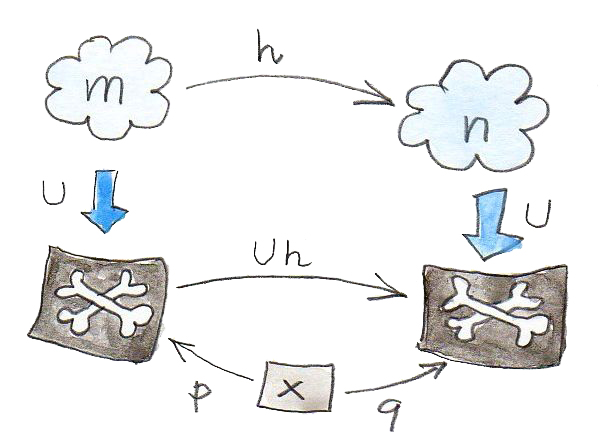

14 Monoidแบบอิสระ(Free Monoid) (Sketch)
Monoidนั้นคือแนวคิดที่สำคัญในทั้งทฤษฎีcategoryและในการเขียนโปรแกรม categoryต่างๆนั้นตรงกับภาษาแบบstrongly typed monoidนั้นตรงกับภาษาแบบuntyped นั้นหมายความว่าในmonoidคุณสามารถประกอบสองfunctionใดๆก็ตาม (แน่นอนว่าคุณสามารถที่จะจบที่errorในruntimในตอนที่คุณดำเนินการโปรแกรมของคุณ)
เราได้เห็นแล้วว่าmonoidอาจจะถูกอธิบายในฐานะcategoryกับวัตถุเดี่ยวที่ทุกพฤติกรรมถูกเขียนลงไปในกฏของการประกอบกันของmorphism ในแม่พิมพแบบcategoryนั้นเท่ากับ(แบบทั้งหมด)นิยามดั้งเดิมในแบบทฤษฎีsetของmonoidที่เรา”คูณ”สองสมาชิกของsetในการได้สมาชิกที่สาม ขบวนการของ”การคูณ”สามารถถูกแยกชิ้นส่วนออกมาโดยที่สิ่งแรกคือการสร้างคู่ของสมาชิกแล้วก็หาตัวคู่นี้กับสมาชิกที่มีอยู่แล้ว(นั้นก็คือ”product”ของพวกมัน)
สิ่งที่เกิดขึ้นในตอนที่เราละทิ้งส่วนที่สองของการคูณ (การหาสมาชิกที่มีอยู่แล้วที่คู่กับคู่ต่างๆ)? ตัวอย่างเช่นเราสามารถที่จะเริ่มกับsetใดๆก็ตามแล้วก็สร้างคู่ที่เป็นไปได้ของสมาชิกต่างๆและเรียกมันว่าสมาชิกใหม่ แล้วเราจะจับคู่สมาชิกใหม่เหล่านี้กับสมาชิกที่เป็นไปได้ทั้งหมดและอื่นๆ มันคือปฏิกิริยาลูกโซ่ ที่เราจะเพิ่มสมาชิกใหม่ไปเรื่อๆไปตลอก ผลที่ตามมาอย่างsetไม่จำกัดจะเกือบเป็นmonoid แต่monoidก็ต้องการสมาชิกunitและกฏของการเปลี่ยนหมู่ ไม่มีปัญหา เราสามารถที่จะเพิ่มสมาชิกunitพิเศษและจับคู่ในบางคู่ (แค่ให้พอที่จะรับรองกฏของunitและการเปลี่ยนหมู่)
เรามาดูกันในการที่มันสามารถเป็นไปได้ในตัวอย่างที่ง่ายๆ เรามาเริ่มกับsetของที่มีสองสมาชิก \(\{a,b\}\) ที่เราจะเรียกมันว่าgeneratorsของmonoidแบบอิสระ อย่างแรก เราจะเพิ่มสมาชิกพิเศษ\(e\)ในกระทำเป็นunit ต่อมาเราจะเพิ่มทุกๆpairของสมาชิกและเรียกมันว่า”product” productของ\(a\)และ\(b\)จะเป็นคู่\((a,b)\) productของ\(b\)และ\(a\)จะเป็นคู่ของ\((b,a)\) productของ\(a\)และ\(a\)จะเป็นของ\((a,a)\) productของ\(b\)และ\(b\)จะเป็นของ\((b,b)\) เราสามาถจะสร้างคู่กับ\(e\)อย่าง\((a,e),(e,b)\)และอื่นๆ แต่เราจะจับคู่มันกับ\(a,b\)และอื่นๆ ดังนั้นในรอบนี้ เราจะแค่ต้องเพิ่ม\((a,a),(a,b)\)และ\((b,a)\)และ\((b,b)\)และจบลงด้วยกับset\(\{e,a,b,(a,a),(a,b),(b,a),(b,b)\}\)
ในรอบต่อไป เราก็จะเพิ่มสมาชิกอย่าง: \((a,(a,b)),((a,b),a)\)และอื่นๆ ในจุดๆนี้ เราจะต้องที่จะทำให้แน่ใจว่ากฏของการเปลี่ยนหมู่นั้นถูกต้อง ดังนั้นเราจะจับคู่\((a,(b,a))\)กับ\(((a,b),a)\)และอื่นๆ ในอีกความหมายหนึ่งเราไม่ต้องการที่จะมีวงเล็บภายใน
คุณสามารถเดาได้ว่าผลของกระบวนการนี้จะเป็นว่า เราจะสร้างรายการที่เป็นไปได้ทั้งหมดของ\(a\)และ\(b\) ในความเป็นจริงแล้ว ถ้าเราแสดง\(e\)ในฐานะlistว่าง เราสามารถที่จะเห็นว่า”การคูณ”ของเรานั้นไม่ต่างกับ การต่อกันของlist
การสร้างแบบนี้ที่คุณทำการสร้างการผสมกันของสมาชิกไปเรื่อยๆ และทำการจับคู่ให้น้อยที่สุด (แค่ให้เพียงพอที่จะให้กฎต่างๆยังอยู่) นั้นเรียกว่าการสร้างแบบอิสระ (free construction) สิ่งที่เราได้ทำคือการสร้างmonoidแบบอิสระ จากsetของgenerators\(\{a,b\}\)
14.1 MonoidแบบอิสระในHaskell
setที่มีสองสมาชิกในHaskellนั้นเท่ากันกับtypeBoolและmonoidแบบอิสระนั้นถูกสร้างโดยsetนี้ที่เท่ากันกับtype[Bool] (ซึ่งก็คือlistของBool) (ผมตั้งใจที่จะละเลยปัญหาของlistที่ไม่จำกัด)
monoidในHaskellนั้นถูกนิยามโดยtype class
class Monoid m where
mempty :: m
mappend :: m -> m -> mนั้นแค่บอกว่าในทุกๆMonoidต้องมีสมาชิกธรรมชาติ(neutral element)ที่ถูกเรียกว่าmemptyและfunctionแบบbinary(การคูณ)ที่เรียกว่าmappend unitและกฏของการเปลี่ยนหมู่ไม่สามารถที่จะถูกแสดงในHaskellและต้องถูกตรวจสอบโดยโปรแกรมเมอร์ในทุกๆครั้งที่monoidถูกสร้างขึ้นมา
ความจริงที่ว่าlistของtypeใดๆก็ตามก่อให้เกิดmonoidที่ถูกอธิบายโดยคำนิยามแบบinstanceว่า
instance Monoid [a] where
mempty = []
mappend = (++)มันบอกว่าlistว่าง[]คือสมาชิกแบบunitและการต่อกันของlist(++)คือoperationแบบbinary
ในสิ่งที่เราได้เห็น listของtypeaตรงกันกับmonoidอิสระคู่กับsetaที่เป็นในฐานะgenerator setของจำนวนธรรมชาติคู่กับการคูณนั้นไม่เป็นmonoidอิสระเพราะว่าเราได้เห็นว่าหลายๆอย่างนั้นเป็นproduct ลองมาเทียวกันในตัวอย่าง
2 * 3 = 6
[2] ++ [3] = [2, 3] // not the same as [6]นั้นเป็นสิ่งง่ายแต่คำถามคือว่า เราสามารถที่จะทำการสร้างแบบอิสระในทฤษฎีcategoryที่ที่เราไม่สามารถที่จะมองเขาไปในวัตถุ? เราจะมาใช้สิ่งที่เราได้ใช้มาตลอดอย่าง การสร้างแบบสากล
คำถามที่น่าสนใจที่สองคือการที่ว่า monoidใดๆก็ตามสามารถที่จะให้ได้มาจากบางmonoidอิสระโดยการกำหนดมากกว่าจำนวนขั้นต่ำของสมาชิกที่ต้องมีภายใต้กฏ ผมจะแสดงให้คุณได้เห็นว่าสิ่งนี้ตามมาจากโดยตรงจากการสร้างแบบสากล
14.2 การสร้างแบบสากลของmonoidแบบอิสระ
ถ้าคุณจำได้จากประสบการณ์ก่อนหน้านี้กับการสร้างแบบสากล คุณอาจจะสังเกตได้ว่ามันไม่เกี่ยวกับการสร้างบางอย่างแต่เกี่ยวกับการเลือกวัตถุที่ตรงกันกับรูปแแบที่ให้มามากว่า ดังนั้นถ้าเราต้องการที่จะใช้การสร้างแบบสากลในการ”สร้าง”ของmonoidแบบอิสระ เราต้องพิจารณาmonoidหลายๆตัวในการเลือกของเรา เราต้องการcategoryทั้งหมดของmonoidที่เราจะเลือกมาจาก แต่monoidสามารถก่อให้เกิดcategoryหรือเปล่า?
เรามาดูที่monoidในฐานะsetที่มีโครงสร้างเพิ่มเติมนิยามโดยunitและการคูณ เราจะเลือกในฐานะmorphism functionเหล่านี้ที่คงโครงสร้างแบบmonoidไว้ functionที่คงโครงสร้างแบบmonoidไว้เหล่านี้ถูกเรียกว่าhomomorphism homomorphismของmonoidต้องโยงproductของสองสมาชิกไปยังproductของการโยงของสมาชิกทั้งสองอย่าง
h (a * b) = h a * h bและมันต้องโยงunitไปยังunit
ตัวอย่างเช่น ลองพิจารณาhomomorphismจากlistของจำนวนเต็มไปยังจำนวนเต็ม ถ้าเราโยง[2]ไปยัง\(2\)และ[3]ไปยัง\(3\) เราต้องโยง[2, 3]ไปยัง\(6\)เพราะว่าการเชื่อมต่ออย่าง
[2] ++ [3] = [2, 3]กลายมาเป็นการคูณ
2 * 3 = 6ในตอนนี้ เรามาลืมเกี่ยวกับโครงสร้างภายในของmonoidเดี่ยวๆและไปดูพวกมันในฐานะวัตถุกับmorphismที่คู่กัน คุณสามารถที่จะมีcategory\(\textbf{Mon}\)ของmonoids
Okอาจจะก่อนที่เราจะลืมเกียวกับโครงสร้างภายใน เรามาให้ความสนใจกับคุณสมบัติที่สำคัญ ทุกๆวัตถุของ\(\textbf{Mon}\)สามารถที่จะถูกโยงอย่างตรงไปตรงมาไปยังsetมันคือแค่setของสมาชิกของมัน
setนี้ถูกเรียกว่าsetพื้นฐาน(underlying) ในความเป็นจริงแล้วไม่ได้แค่เราโยงวัตถุต่างๆของ\(\textbf{Mon}\)ในsetต่างๆ แต่เราสามารถโยงmorphismของ\(\textbf{Mon}\) (homomorphism)ไปยังfunctionต่างๆ อีกครั้งสิ่งนี้อาจจะดูค่อนข้างที่ตรงไปตรงมาแต่มันจะเป็นสิ่งที่มีประโยชน์ในอีกไม่ช้า การโยงแบบนี้ของวัตถุและmorphismจาก\(\textbf{Mon}\)ไปยัง\(\textbf{Set}\)คือfunctorจริงๆแล้ว เนื่องว่าfunctorตัวนี้“ลืม”โครงสร้างของแบบmonoid (ในตอนที่เราอยู่ในsetเปล่าๆ เราไม่แยกแยะสมาชิกunitหรือสนใจเกี่ยวกับการคุณ มันจึงถูกเรียกว่าfunctorการลืม) functorการลืมโผล่มาบ่อยครั้งในทฤษฎีcategory
ในตอนนี้เรามีสองมุมมองของ\(\textbf{Mon}\) เราสามารถมองมันเหมือนกับแค่categoryอื่นๆที่มีวัตถุและmorphism ในมุมมองนี้เราจะไม่เห็นโครงสร้างภายในของmonoids สิ่งที่เราได้สามารถพูดเกี่ยวกับบางวัตถุใน\(\textbf{Mon}\)คือว่ามันเชื่อมต่อกับตนเองและไปยังวัตถุอื่นๆผ่านmorphism ตาราง”การคูณ”ของmorphism(นั้นก็คือกฏของการประกอบ)นั้นได้มาจากมุมมองอีกอันหนึ่งก็คือ monoid-ในฐานะ-set โดยการใช้ทฤษฎีcategory เราไม่ได้ให้มุมมองนี้หายไปอย่างสิ้นเชิง
ในการใช้งานการสร้างแบบสากล เราต้องการที่จะนิยามคุณสมบัติพิเศษที่ให้เราได้ทำการค้นหาผ่านcategoryของmonoidและเลือกสิ่งที่มีคุณสมบัติที่ดีที่สุดสำหรับmonoidแบบอิสระ แต่monoidแบบอิสระนั้นถูกนิยามโดยgeneratorของมัน ทางเลือกที่แตกต่างกันของgeneratorสร้างmonoidแบบอิสระที่แตกต่างกัน (listของBoolนั้นไม่เหมือนกับlistของInt) การสร้างของเราต้องเริ่มจากsetของgeenratorดังนั้นเราได้กลับมายังset
นั้นเป็นที่functorการลืมได้นำมาใช้ เราสามารถใช้มันในการX-ray monoidของเรา เราสามารถตามหาgeneratorในรูปของX-rayของก้อนเหล่านี้ มันสามารถใช้ได้ดังนี้
เราเริ่มมาจากsetของgenerator\(x\)นั้นคือsetใน\(\textbf{Set}\)
รูปแบบที่เรากำลังจะจับคู่ประกอบด้วยmonoid\(m\) (วัตถุของ\(\textbf{Mon}\))และfunction\(p\)ใน\(\textbf{Set}\)
ที่\(U\)คือfunctorการลืมของเราจาก\(\textbf{Mon}\)ไปยัง\(\textbf{Set}\) สิ่งนี้คือรูปแบบต่างชนิดกันที่แปลก (ครึ่งหนึ่งใน\(\textbf{Mon}\)และอีกครึ่งหนึ่งใน\(\textbf{Set}\))
p :: x -> U mแนวคิดคือว่าfunction\(p\)จะเลือกsetของgeneratorข้างในรูปX-rayของ\(m\) มันไม่สำคัญว่าfunctionอาจจะไม่เหมาะในการตามหาจุดของข้างในset(พวกมันอาจจะรวบพวกมัน) มันจะถูกแก้ไขโดยการสร้างแบบสากลที่จะเลือกตัวแทนที่ดีที่สุดของรูปแบบนี้

เราก็ต้องการที่จะนิยามการจัดลำดับของสิ่งที่มีคุณสมบัติ สมมติว่าเรามีสิ่งที่มีคุณสมบัติอีกตัวอย่างmonoid\(n\)และfunctionที่เลือกgeneratorในรูปของX-rayอย่าง
q :: x -> U nเราจะบอกว่า\(m\)นั้นดีกว่า\(n\)ถ้าได้มีmorphismของmonoid(นั้นคือhomomorphismที่คงไว้ที่โครงสร้าง)
h :: m -> nที่ที่imageภายใต้\(U\)(จำไว้ว่า\(U\)คือfunctorดังนั้นมันจะโยงmorphismไปยังfunction)นั้นแยกตัวประกอบผ่าน\(p\)
q = U h . pถ้าคุณคิดว่า\(p\)ในฐานะการเลือกgeneratorใน\(m\)และ\(q\)ในฐานะการเลือกgeneratorใน\(m\)“ที่เหมือนกัน” แล้วคุณสามารถที่จะคิดถึง\(h\)ในฐานะการโยงgeneratorเหล่านี้ระหว่างmonoidทั้งสอง
จำไปว่า\(h\)โดยโดยนิยามคงไว้ที่โครงสร้างของmonoid มันหมายความว่าผลคูณของgeneratorทั้งสองในmonoidหนึ่งจะถูกโยงไปยังผลคูณgeneratorทั้งสองที่คู่กันในmonoidที่สองและอื่นๆ

การจัดอันดับนี้อาจจะถูกใช้ในการหาสิ่งที่มีคุณสมบัติที่ดีที่สุด(คือmonoidแบบอิสระ)สิ่งนี้คือนิยาม
เราจะเรียกว่า\(m\)(คู่กับfunction\(p\))คือmonoidแบบอิสระคู่กับgenerator\(x\)ต่อเมื่อได้มีmorphism\(h\)ที่เป็นเอกลักษณ์(และอันเดียว)จาก\(m\)ไปยังmonoid\(m\)อื่นๆ(คู่กับfunction\(q\))เป็นไปตามคุณสมบัติของการแยกตัวประกอบข้างบนนี้
โดยบังเอิญสิ่งนี้ตอบคำถามที่สองของเรา function\(Uh\)คือสิ่งที่มีความสามารถในการรวบสมาชิกหลายๆตัวของ\(Um\)ไปยังสมาชิกหนึ่งของ\(Un\) การรวบนี้คู่กันกับการหาบางสมาชิกของmonoidแบบอิสระ ดังนั้นในmonoidใดก็ตามกับgenerator\(x\)สามารถหาได้จากmonoidแบบอิสระที่มาจาก\(x\)โดยการหาบางสมาชิกเหล่านี้ monoidแบบอิสระคือสิ่งที่ต้องการการหาที่น้อยที่สุด
เราจะกลับมายังmonoidแบบอิสระในตอนที่เราพูดเกี่ยวกับadjunction
14.3 โจทย์ท้าทาย
- คุณอาจจะคิด (เหมือนกับผมก่อนหน้านี้)ว่าเงื่อนไขที่homomorphismของmonoidคงไว้ที่unitนั้นมากเกินไป ก็ว่าเรารู้ว่าในทุกๆ\(a\)
h a * h e = h (a * e) = h aดังนั้น \(he\)กระทำเหมือนunitด้านขวา (และในแบบเดียวกันในฐานะunitด้านช้าย) ปัญหาคือว่า\(ha\)สำหรับทุกๆ\(a\)อาจจะรวบแค่monoidย่อยของmonoidเป้าหมาย อาจจะมีการที่unit”จริง”อยู่นอกเหนือจากimageของ\(h\) จงแสดงว่าisomorphisระหว่างmonoidที่คงการคูณไว้ต้องคงการunitไว้อย่างอัตโนมัติ
- ลองพิจารณาhomomorphismแบบmonoidจากlistของจำนวนเต็มกับการต่อกันของจำนวนเต็มกับการคูณ อะไรคือimageของlistว่าง
[]? สมมติว่าlistที่มีสมาชิกเดี่ยวนั้นถูกโยงจากจำนวนเต็มที่มันเก็บอยู่นั้นก็คือ[3]นั้นถูกโยงไปยัง\(3\)และอื่นๆ อะไรคือimageของ[1, 2, 3, 4]? แล้วมีกี่listที่แตกต่างกันที่โยงไปยังจำนวนเต็ม\(12\)? แล้วมีhomomorphismอื่นๆระหว่างmonoidทั้งสองหรือเปล่า - อะไรคือmonoidแบบอิสระที่ถูกสร้างจากsetที่มีสมาชิกหนึ่ง? คุณสามารถที่จะหาสิ่งที่มันisomorphicด้วยหรือเปล่า?